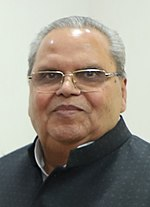
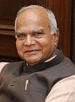
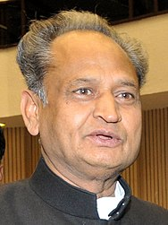
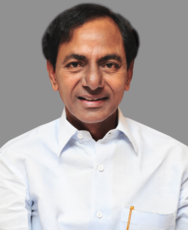
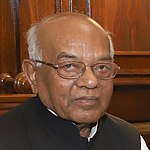
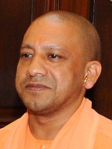

Winter Capital :‐ Dharmshala


.jpg)

.jpg)
.jpg)


.jpg)


Summer Capital:‐ Gairsain


_(cropped).jpg)
| Sr.No. | State Name | Capital Name | Governer | Chief Minister | ||
|---|---|---|---|---|---|---|
| Name | Image | Name | Image | |||
| 1 | Bihar | Patna | Phagu Chauhan | Nitish Kumar | |
|
| 2 | Andhra Pradesh | Amrawati | Biswabhushan hari chandan | y.S.jagan Mohan Reddy | |
|
| 3 | Arunachal Pradesh | Itanagar | Brigadier B.D Mishra (Retd ) | Pema Khando | |
|
| 4 | Assam | Dispur | Jagdish Mukhi | Himanta Biswa Sarma | |
|
| 5 | Chhatisgardh | Naya Raipur/Bilaspur | Anusuiya Uikui | Bhupesh Bhagel | |
|
| 6 | Goa | Panji | Ps Sreedharna Pillai | Pramod sawant | |
|
| 7 | Gujrat | Gandhi Nagar | Acharya devvrat | Bhuppendrabhai Patel | |
|
| 8 | Hariyana | Chandigardh | Bandaru dattatreya | Manohar lal khattar | |
|
| 9 | Himachal Pradesh | Summer Capital:‐ Shimla
Winter Capital :‐ Dharmshala |
Rajendra vishwanath arlekar | Jairam thakur | ||
| 10 | Jharkhand | Ranchi | Ramesh bais | Hemant Soren | |
|
| 11 | Karnataka | Bengaluru | Thawar chand gehlot | Sri basavaraj bommai | ||
| 12 | Kerala | Triuvananthapuram | Arif mohammed Khan | Pinaraya vijayan | |
|
| 13 | Madhyapradesh | Bhopal | Mangu Bhai Changanbhi Patel | Shivraj Singh Chouhan | |
|
| 14 | Maharashtra | Mumbai | Bhagat singh koshyari | Eknath Shinde | |
|
| 15 | Manipur | Imphal | Shri la.Ganesan | |
N Biren Singh | |
| 16 | Meghalaya | Shillong | Satya pal Malik |  | Conrad Kongkal sangma | |
| 17 | Mizoram | Aizwal | Dr. Kambhampati HariBabu | Zoramthanga | |
|
| 18 | Nagaland | Kohima | Jagdish Mukhi | |
Neiphiu rio | |
| 19 | Odisha | Bhubaneshwar | Prof. Ganeshei lal Mathur | |
Naveen Patnaik | |
| 20 | Punjab | Chandigarh | Shri Banwarilal Purohit |  | Bhagwant Mann | |
| 21 | Rajsthan | Jaipur | Kalraj Mishra | Ashok Gehlot |  | |
| 22 | Sikkim | Gangtok | Ganga Prasad | Prem Singh Tamang (PS Golay) | |
|
| 23 | Tamil Nadu | Chennai | R.N. Ravi | |
M.K. Stalin | |
| 24 | Telangan | Hyderabad | Dr Tamilisai soundararajan | |
K. Chandrashekhar Rao |  |
| 25 | Tripura | Agartala | Satyadv Narayan arya |  | Manik Saha | |
| 26 | Uttar Pradesh | Lucknow | Anandiben Patel | Yogi Adityanath |  | |
| 27 | Uttarakhand | winter Capital:‐ Dehradun Summer Capital:‐ Gairsain |
Gurmit Singh | |
Shri Pushkar Singh Dhami | |
| 28 | West Bengal | Kolkata | Jagdeep Dhankar | Mamata Banerjee(Didi) | |
|